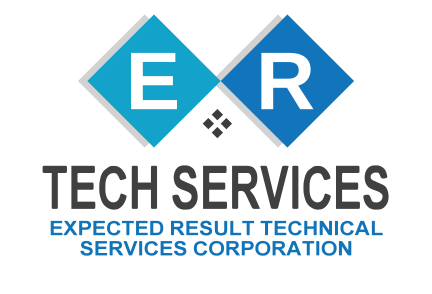

For Restaurants & Fast Food
Technology Overview

From the front counter to the drive-thru and the back dock, we handle it all under one roof — security, cameras, networks and audio designed to cut shrink, speed up service and keep every shift running smoothly.
Service & Maintenance
Expected Result Technical Services Corporation
Langley, BC · Office 778-808-8769 · results@ertechservices.ca
Lic. #B7128 · TSBC LIC-00214786